library(tidyverse)
library(easystats)
library(MASS) # for fitting negative binomial models
library(pscl) # for fitting zero-inflated models 2 Modelling counts
In the previous section, we looked at the consequences of pretending a bound asymmetrically distribution is unbound and symmetrical. In this tutorial, we’re going to discuss what happens if we assume that a distribution is continuous when, in fact, it is not.
Every model that we fit makes one fundamental assumption that more often than not won’t be highlighted on any diagnostic plots. It’s the assumption about the level of measurement of our variable. For example, logistic models assume that the outcome variable is a categorical binary variable, ordinal models assume the outcome is ordinal, Gaussian and Gamma models assume that it is continuous. The reason why software often doesn’t provide an immediately obvious way to check that this assumption is met is that it is out responsibility as the researcher to ensure the way we’re operationalising a variable is suitable for the kind of model we want to fit later.
Another level of measurement is counts. For example:
How many cups of coffee does an average lecturer drink per day?
How many children are there in a typical household?
How many goals are typical in a football game?
How many short-form videos does an average grad student scroll through per day when procrastinating from their dissertation work/thesis?
Counts are characterised as integers - this means that they can only be expressed as a whole number without decimal points. Despite this, they are another victim of the GLM tyranny, more often than not modelled as unbound continuous variables. The consequences of assuming a continuous level of measurement when the variable is measured in counts vary in severity, depending on the context. For example, if we say that an average lecturer drinks 3.5 cups of coffee per day, it implies that they either make half a cup of coffee (which is silly), or they make four and then pour out half of one (which is unhinged). However, if we say that a typical household consists of two parents, one dog, one cat, and 2.4 children, things suddenly take a dark turn.
In this tutorial, we’re going to look into ways of modelling count variables more sensibly. We’ll explore the following types of models:
Poisson models
Negative binomial models
Quasi-poisson models
Zero-inflated models
Scenario
A university lecturer wishes to understand the predictors of undergraduate student attendance in lectures. They record the number of lectures the students attended (
n_lectures) per 11-week term (with one lecture per week). For predictors, they considers:
Year of study - first, second, or third (
year)How many lecture recordings they accessed (
n_record)Average grade on the module (
overall_grade)The lecturer wants to include all the predictors in the model. They make a hypothesis regarding the year of study:
H1: First year students will be more likely to attend lectures compared to second and third year students.
Packages
We’re using the following packages:
The data
The data are stored in the attendance_data.csv. Download the data and import it to Posit Cloud. Once you’ve done so, you can read the data into R by running:
attend_tib <- here::here("data/attendance_data.csv") |>
readr::read_csv()Before we do anything else, we should always check our data to make sure the reading command worked as intended1
attend_tib The year variable is a categorical variable with more than two levels. We’re going to convert it into a factor:
attend_tib <- attend_tib |>
dplyr::mutate(
year = factor(year)
)For the comparison specified in the hypothesis, we want “Year 1” to be coded as the baseline against which to compare the other two years. We can check the order of our levels with the levels() function:
levels(attend_tib$year)code [1] "Year 1" "Year 2" "Year 3"“Year 1” is listed first, which means that R will use it as the baseline group. We don’t need to do anything else here, but if the groups weren’t in the correct order, we’d need to reorder them with the forecats::fct_relevel() function.
Descriptives and data viz
We’re using the same code as usual for the descriptives. We’re also adding an argument include_factors = TRUE so that we get some summaries for the categorical variables.
describe_distribution(attend_tib, include_factors = TRUE) |>
display()| Variable | Mean | SD | IQR | Range | Skewness | Kurtosis | n | n_Missing |
|---|---|---|---|---|---|---|---|---|
| student_id | 24937.43 | 2884.07 | 5132.00 | (20026, 29973) | 0.03 | -1.21 | 584 | 0 |
| n_lectures | 1.33 | 1.64 | 2.00 | (0, 10) | 1.64 | 3.07 | 584 | 0 |
| year | (Year 1, Year 3) | 0.18 | 2.17 | 584 | 0 | |||
| n_record | 5.26 | 1.63 | 2.00 | (0, 11) | 0.08 | 0.13 | 584 | 0 |
| overall_grade | 54.58 | 13.49 | 17.05 | (0, 96.57) | -0.19 | 0.55 | 584 | 0 |
Some things of note - the average number of lectures attended is extremely low - less than two out of 11 lectures. This variable is also quite skewed and has excess kurtosis. Let’s see what it looks like. To spice things up, we’ll create a nice histogram this time, overlayed by a count line. If you’re copying and adjusting code, try copying line by line so you can see the changes gradually:
1ggplot2::ggplot(data = attend_tib, aes(x = n_lectures)) +
2 geom_histogram(fill = "yellowgreen", alpha = 0.4) +
3 geom_line(stat = "count") +
4 geom_point(size = 2, stat = "count") +
5 scale_x_continuous(breaks = seq(0, 11, 1)) +
6 theme_light()- 1
- Create the base layer, placing the number of layers on the x axis
- 2
- Add the histogram. We’re also changing the default colour and we’re making it a little transparent. This is optional (but looks nice)
- 3
- Add a line. Set the statistic used for calculating the values to be a “count”.
- 4
-
Add points. We can make them a little larger using the
sizeargument. As above, we’re requesting the “count” statistic. - 5
-
Change the scale to make sure the breaks are only at whole numbers and not at places with decimal points. We could just list all the numbers for the
breaksargument - e.g.c(1,2,3,4,5,6,7,8,9,10,11)- but it’s more efficient to request a sequence of numbers starting at 0, going up to 11 (because that’s how many lectures there were in total), increasing by 1 at each step:seq(0, 11, 1). - 6
- Add a nice theme.
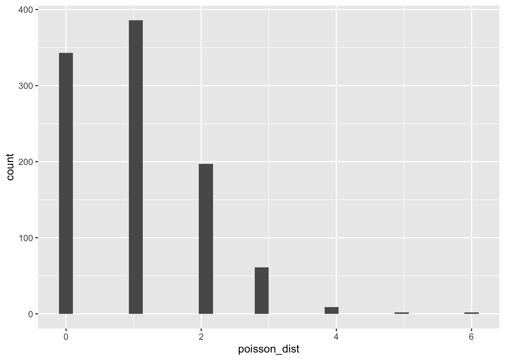
Often the histogram itself is enough to give us the necessary info. However with count variables, adding the line and the points can be used to show that the outcome variable is indeed a count variable and that we’re going to treat it as such (as opposed to treating it as continuous.
We can see that we have a right skewed distribution. Quite a lot of students did not attend any lectures at all or they went to just one. Very few participants attended 10 lectures, and no-one attended all of them (number 11 doesn’t even show up on the plot unless we force the plot to do so).
For the hypothesis, we can create a dot plot instead of a scatter plot (because we have a categorical predictor):
1ggplot2::ggplot(data = attend_tib, aes(x = year, y = n_lectures)) +
2 geom_point(position = position_jitter(width = 0.1), alpha = 0.2, colour = "yellowgreen") +
3 stat_summary(colour = "steelblue", fun.data = "mean_cl_normal") +
4 scale_y_continuous(breaks = seq(0, 11, 1)) +
theme_light() - 1
-
Set up the base layer. The predictor
yeargoes on the x axis, the outcome goes on the y axis. - 2
-
Add the points. We’re tweaking the default settings so the distribution of the points is a little easier to see. For
positionwe’re setting “position_jitter” which ensures the points are not stacked on top of each other. Thewidthargument defines how far out the points spread. We’re also changing the transparencyalphato 0.2 so we can see more of the points. Finally, we change the colour. - 3
-
stat_summaryadds the means and the confidence intervals - we request this by specifying “mean_cl_normal” in thefun.dataargument. When choosing colour, pick something that contrasts well with the scatter points in the background. - 4
- Scale the y axis so it only shows whole numbers.
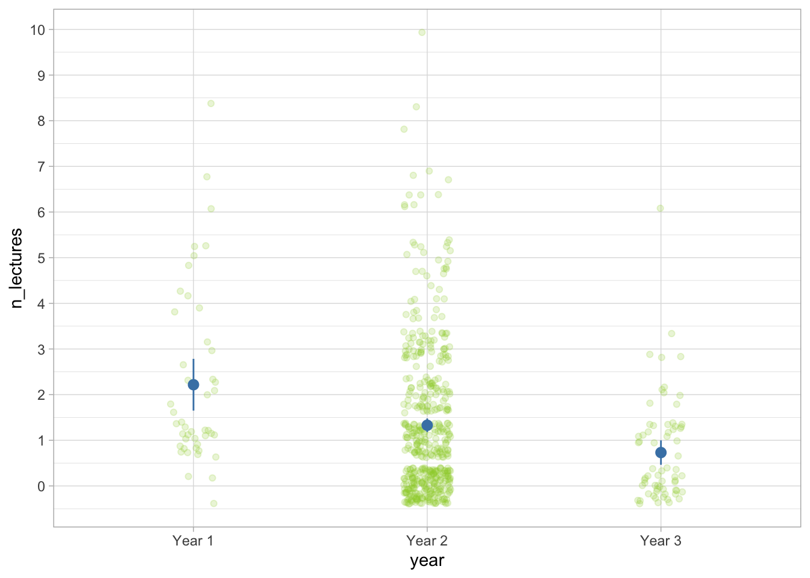
Based on the plot, it seems like Year 1 students have the best attendance (though also have the fewest data points and therefore the widest confidence intervals), followed by Year 2 and Year 3, who attend the fewest sessions.
FYI: Plotting a continuous predictor
In case we need to plot a continuous predictor, we can add a line of best fit in the same way as we did for the Gamma model, changing the methods.args option to a different distribution. For example:
ggplot2::ggplot(data = attend_tib, aes(x = overall_grade, y = n_lectures)) +
geom_point(position = position_jitter(width = 0.1), alpha = 0.2, colour = "yellowgreen") +
stat_smooth(method = "glm", colour = "steelblue", method.args = list(family = "poisson")) +
theme_light() code `geom_smooth()` using formula = 'y ~ x'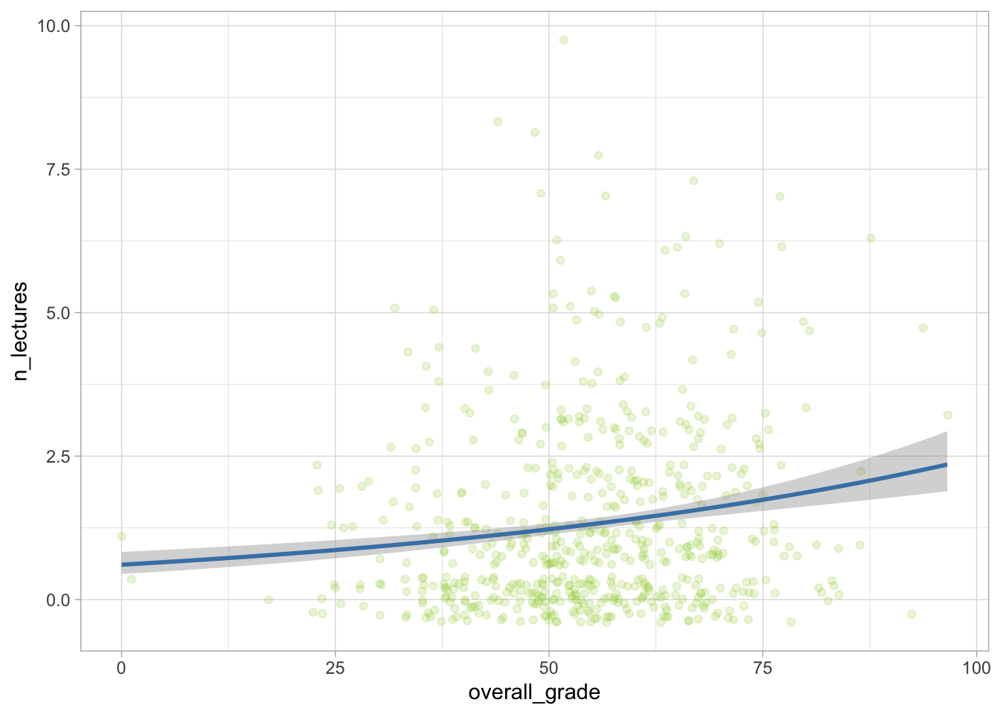
2.1 Poisson models
More often than not, a distribution is defined by some version of two parameters - location and dispersion. Location tells us at which point to centre the distribution and dispersion tells us how far the points spread out. In a Gaussian distribution, we have the mean and the standard deviation. In Gamma models, we have shape and scale. They’re not exactly the same, but they serve a similar function.
Poisson models are simple creatures. They are only defined by one parameter \(\lambda\) (lambda) which represents both the location and the dispersion. This is because of the mean-variance relationship the models assume:
\[ V(Y) = E(Y) \]
In which the variance of Y (the outcome) will always be equal to the expected value of Y. This is in contrast with the Gaussian models, which don’t assume a specific value as long as it’s constant (homoscedastic), or the Gamma models in which variance is equal to the square of the expected value.
As a result, they’re nice and simple to simulate:
1poisson_dist <- rpois(n = 1000, lambda = 1)
2ggplot2::ggplot(data = NULL, aes(x = poisson_dist)) +
3 geom_histogram()- 1
-
Generate 1000 random numbers drawn from a Poisson distribution with the lambda parameter equal to 1. Save the result into an object called
poisson_dist. - 2
-
Add
poisson_distinto the base layer of a plot - 3
- Draw a histogram.
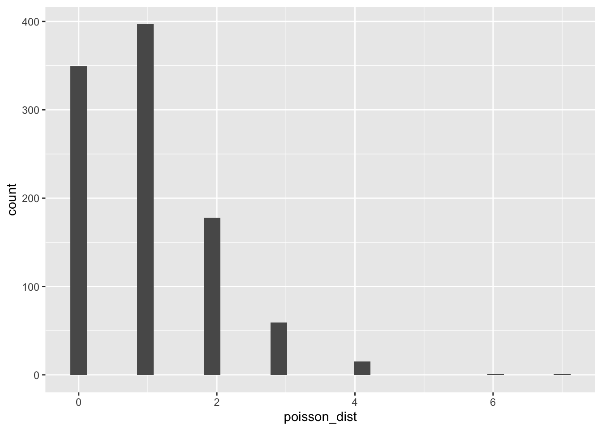
As expected, the distribution only generates integers (or whole numbers). We can confirm this with the head() function, which will print out the first six values from the object we enter into it:
head(poisson_dist)[1] 1 3 0 0 3 1The distribution is also right skewed. A Poisson distribution can only be right skewed or symmetrical. The larger the lambda parameter, the more symmetrical the distribution will be:
poisson_dist <- rpois(n = 1000, lambda = 10)
ggplot2::ggplot(data = NULL, aes(x = poisson_dist)) +
geom_histogram() 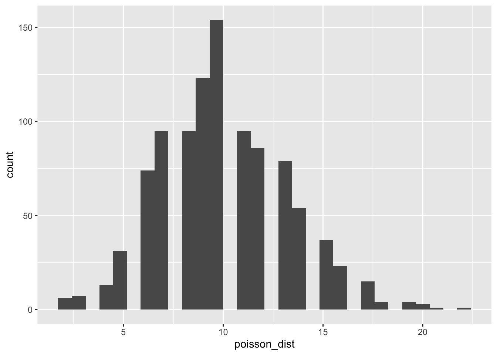
Note that even if the distribution achieves perfect symmetry, we still can’t call it normal, because the values are not on a continuous scale (and there are other requirements a normal distribution has, other than symmetry).
Conversely, lambda can be smaller than 1, in which case the skew becomes more extreme and values will be bunched up around the lower end of the scale:
poisson_dist <- rpois(n = 1000, lambda = 0.5)
ggplot2::ggplot(data = NULL, aes(x = poisson_dist)) +
geom_histogram() 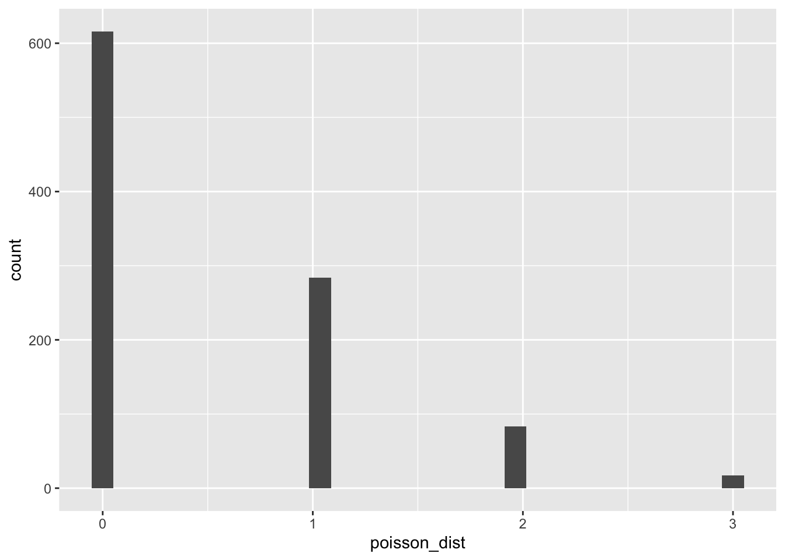
This mean-variance relationship is very restrictive. Realistically, there aren’t many variables that strictly follow a Poisson distribution, but let’s not doom our model before we’ve given it a chance (spoiler alert…).
Fit the model
We can fit the model using the glm function.
Evaluate the model fit
check_model(attend_poiss)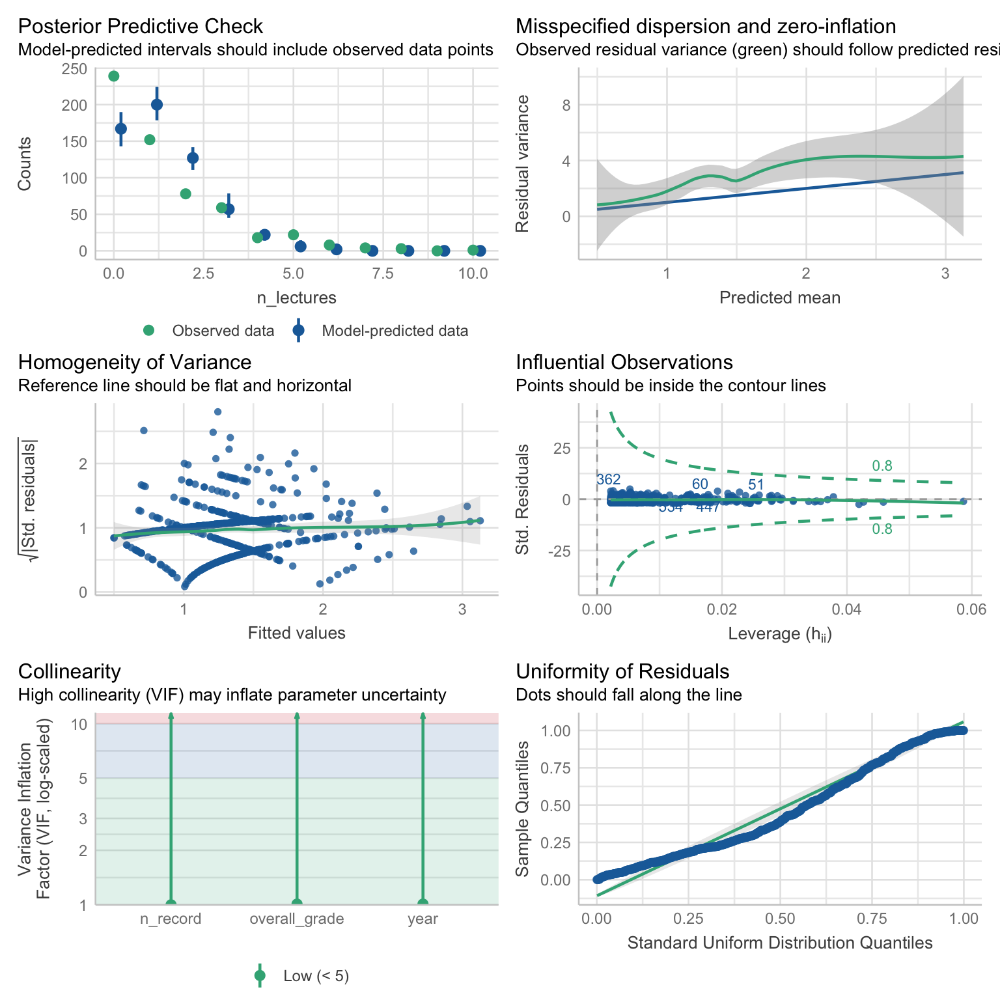
First, let’s go through the plots we already know.
Posterior predictive check - we no longer see the smooth curves - this is not a problem, because we’re not working with continuous data. The predictions themselves are not great. The model predicts fewer counts for values 0, 1, and 2than observed. The predictions are fine from 3 onward, but that left tail is quite inaccurate.
Homogeneity of variance - looks a little funky because of the criss-crossy pattern. Again, this is not a problem and caused by the fact that we’re working with counts. The line isn’t entirely flat, but overall not too wobbly. I’d say the model passes the
vibediagnostic check on this criterion.Influential observations - nothing flagged here.
Collinearity - all VIF values are low and not a cause for concern
Uniformity of residuals - the points wobble around the line.
Based on the posterior predictive check and the residuals, it seems like the model is not a great fit. This is confirmed by the plot that we skipped, which checks for over-dispersion.
Over-dispersion
Let’s take a closer look at this plot:
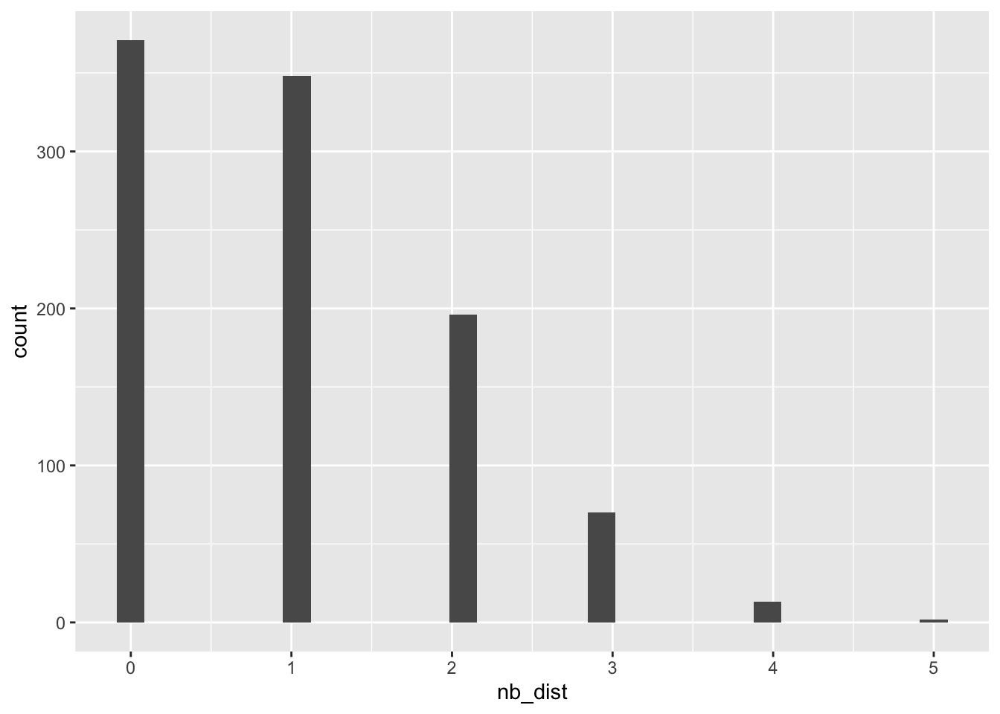
The straight blue line represents what kind of variance the model expects for different predicted values. Recall that the mean-variance relationship is:
\[ V(Y) = E(Y) \]
It’s a little difficult to see on the plot, but the line is plotted in a way where the value 1 on the x axis corresponds to the value of 1 on the y axis. Value 2 on x represents to 2 on y, and so on. We need the variance in our model (the green line with the ribbon) to follow this line. We can see that this is not the case. The green line wiggles above the straight line most of the time. This means that there is more dispersion in our model then the Poisson model allows - it is over-dispersed.
Although this case is pretty cut and dry, we can use the over-dispersion test from easystats to get a second opinion:
check_overdispersion(attend_poiss)code # Overdispersion test
code
code dispersion ratio = 1.927
code Pearson's Chi-Squared = 1115.938
code p-value = < 0.001code Overdispersion detected.For a Poisson model, we’d expect the dispersion ratio to be 1. If it’s above 1, the model is over-dispersed, if it’s below 1, it’s under-dispersed. A p-value tells us whether this deviation from 1 is statistically significant.
Significance tests of assumptions
Generally, significance tests of assumptions are not the best idea because they because they encourage black and white thinking (over-dispersed vs under-dispersed) instead of nuanced evaluation. The dispersion ratio itself is a useful indicator of the amount of dispersion we have, however the p-values can be misleading. In larger samples, they will be more likely to sound an alarm even if the violation is minor. They might be helpful in an ambiguous situation where the plot isn’t clear, but even then a problem in one diagnostic plot will likely be echoed in at least one other plot.
Under over-dispersion, the parameter estimates are valid, however the standard errors (and therefore confidence intervals and p-values) are not. On the whole, this model is clearly not well specified. We have some alternatives. Again, ideally we want to think about whether a distribution is suitable for our data before we even collected the data, and certainly before we start mucking about with the data in the analysis stage. But let’s say that we’ve miscalculated. What are our options? Well, we still have:
Negative binomial models
Quasi-Poisson models
2.2 Negative binomial models
Negative binomial (NB) distribution allows us to model counts in situations where dispersion is is greater than the expected mean. Unlike Poisson, NB distribution has a separate dispersion parameter that allows the model to be a little more flexible. The variance (V) is modelled as:
\[ V(Y) = E(Y) + \frac{E(Y)^2}{k} \]
Which is the sum of the expected value of Y plus the square of the expected value divided by the dispersion parameter k . The k parameter therefore controls how far the values spread out. The smaller the k, the larger the dispersion and the extent of skewness are going to be (because dividing by a small number results in a larger number).
In the code below, the theta argument represents the k parameter:
nb_dist <- MASS::rnegbin(n = 1000, mu = 1, theta = 0.5)
ggplot2::ggplot(data = NULL, aes(x = nb_dist)) +
geom_histogram() 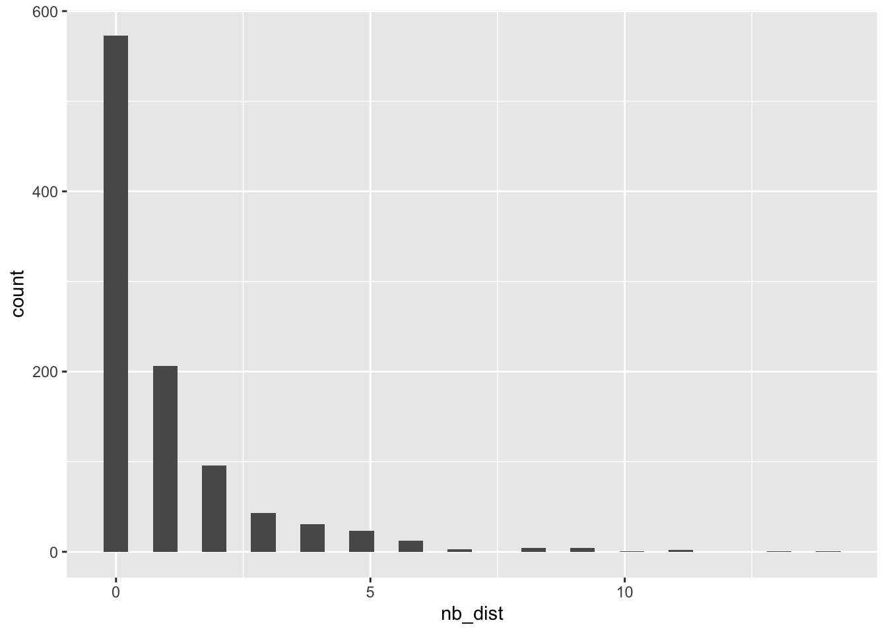
Conversely, we can set theta to be very large, in which case the NB distribution will start to resemble the Poisson distribution. This is because we divide by a large number, so the fraction \(\frac{E(Y)^2}{k}\) will result in a very small value, and the variance will be very close to the value of the mean.
nb_dist <- MASS::rnegbin(n = 1000, mu = 1, theta = 100)
ggplot2::ggplot(data = NULL, aes(x = nb_dist)) +
geom_histogram() 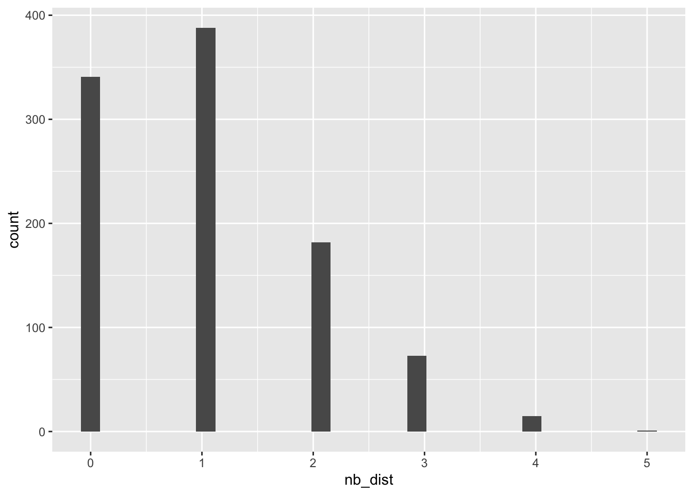
Fit the model
Let’s try this again, shall we? The function is a little different this time - we’re using the glm.nb from the package MASS to fit a negative binomial model. We still need to specify the formula and the data, but we don’t need to specify the family because glm.nb function can only fit negative binomial models:
attend_nb <- MASS::glm.nb(
n_lectures ~ n_record + year + overall_grade,
data = attend_tib
)Evaluate the model fit
check_model(attend_nb)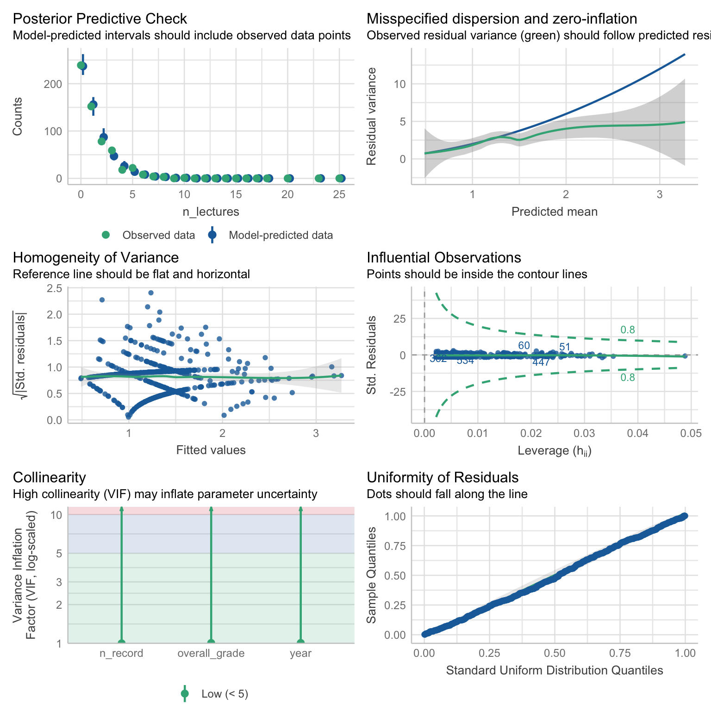
Posterior predictive check - this is a much better fit then before.
Homogeneity of variance: looks fine
Influential cases: none detected
Collinearity: none detected
Residuals - follow the line nicely.
Dispersion… wrong way around! This time, the variance is increasing at a slower rate than the model expects, as the green line with the ribbon departs from the predicted blue line around 1.5 on the x axis and continues below it. This is called under-dispersion. Again. the predictions and parameter estimates might be accurate, but if we care about inferential stats (let’s say that we do), we’re running the risk of basic our decisions on inaccurate p-values.
2.3 Quasi-Poisson models
A third type of model we’re going to try is the Quasi-Poisson model. Strictly speaking, Quasi-Poisson models don’t belong to the GLM family, but they are very GLM like, in that:
- They apply linearising link function to model the relationships of interest. This function is the natural logarithm, same as for Gamma and Poisson models.
- They assume a mean-variance relationship, specifically that \(V(Y) = \phi E(Y)\) . In Poisson models, the \(\phi\) parameter is assumed to be 1, and therefore the variance is equal to the expected value. In Quasi-Poisson models, \(\phi\) is estimated from the data and can be different from 1. The larger the \(\phi\) the larger the variance.
- We fit them with the
glmfunction.
Unfortunately, we can’t really simulate a Quasi-Poisson distribution to show how it changes with a changing \(\phi\), because such a distribution doesn’t exist. In this sense, the models are different from GLM:
Because a Quasi-Poisson distribution doesn’t exist, the estimation cannot be based on Maximum Likelihood. It is based on Quasi-Likelihood.
Instead, the parameters are estimated in the same way, but in addition we need to estimate the \(\phi\) parameter, which is then used to adjust the standard errors, ensuring the inference (i.e. the p-values) is valid.
Because of the way \(\phi\) is estimated, the model can deal with over- or under dispersion. If we were to use robust models as a metaphor for Quasi-likelihood models, they’re a similar level of fix as heteroscedasticity-consistent standard errors (e.g. “HC4”, “HC5”) - when we apply the HC4 correction, the parameter estimates are not affected, but the standard errors change because they are estimated from the model predictor matrix rather then based on an assumption of constant variance.
The drawbacks of Quasi-models
The general guidance is that we should use negative-binomial models when we have over-dispersed data, and only resolve to Quasi-Poisson if the issues with dispersion aren’t fixed under the NB distribution.
Main reason being is that Quasi-likelihood models rob us of some of the benefits of full-likelihood models, such as the ability to compare models and evaluate improvement after adding predictors.
For example, imagine that we built our NB models bit by bit, by adding the predictors one after another:
attend_0 <- MASS::glm.nb(n_lectures ~ 1, data = attend_tib)
attend_1 <- MASS::glm.nb(n_lectures ~ year, data = attend_tib)
attend_2 <- MASS::glm.nb(n_lectures ~ year + n_record, data = attend_tib)
attend_3 <- MASS::glm.nb(n_lectures ~ year + n_record + overall_grade, data = attend_tib)We can then compare these models based on AIC, BIC, and pseudo R2 :
compare_performance(attend_0, attend_1, attend_2, attend_3, metrics = "common") |>
display()| Name | Model | AIC (weights) | BIC (weights) | Nagelkerke’s R2 | RMSE |
|---|---|---|---|---|---|
| attend_0 | negbin | 1861.1 (<.001) | 1869.8 (6.00e-03) | 2.04e-15 | 1.64 |
| attend_1 | negbin | 1843.4 (0.01) | 1860.9 (0.48) | 0.06 | 1.61 |
| attend_2 | negbin | 1845.3 (5.00e-03) | 1867.2 (0.02) | 0.06 | 1.61 |
| attend_3 | negbin | 1834.6 (0.98) | 1860.8 (0.49) | 0.09 | 1.60 |
We can see that Model 2 (in which we added the n_record predictor) is not really an improvement compared to the previous models. Generally, we’re looking for a model with the lowest AIC and BIC. We can also see that the \(R^2\) value doesn’t change from Model 1 to Model 2, but does improve for Model 3.
We can confirm this with a likelihood ratio test:
anova(attend_0, attend_1, attend_2, attend_3) |>
display(digits = 3)| Model | theta | Resid. df | 2 x log-lik. | Test | df | LR stat. | Pr(Chi) |
|---|---|---|---|---|---|---|---|
| 1 | 1.212 | 583 | -1857.067 | ||||
| year | 1.342 | 581 | -1835.397 | 1 vs 2 | 2 | 21.670 | 1.970e-05 |
| year + n_record | 1.342 | 580 | -1835.317 | 2 vs 3 | 1 | 0.081 | 0.777 |
| year + n_record + overall_grade | 1.422 | 579 | -1822.621 | 3 vs 4 | 1 | 12.695 | 3.666e-04 |
Here, the last column contains the p-value that tells us whether each model is a significant improvement compared to the previous model. The p-value for Model 2 is not statistically significant.
If likelihood-based comparisons are something we’re interested in, then we cannot use Quasi-Poisson model for estimation. But if we only want to estimate the parameters and make valid inference, they’re a good solution for dealing with over- or under-dispersion.
Fit the model
attend_qpoiss <- glm(
n_lectures ~ year + n_record + overall_grade,
data = attend_tib,
family = quasipoisson(link = "log")
)Evaluate the model fit
We don’t actually gain any additional insight from the model_check function - it will still tell us that there is over-dispersion based on the Poisson expectations, and the residuals will still indicate a suboptimal fit (because the check also expects a Poisson distribution). The posterior predictive check disappears, because there’s no theoretical distribution based on which to make predictions. The model fit statistics will also be based on the Poisson distribution, not on Quasi-Poisson. The only thing that is unique to Quasi-Poisson is the standard errors and p-values.
check_model(attend_qpoiss)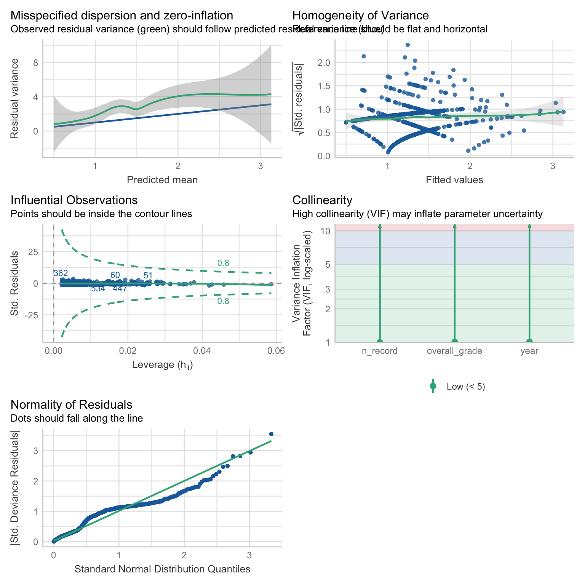
This highlights the fact that a Quasi-Poisson is a “fix” to a problem and more of contingency, rather than a model that can be thoughtfully planned in advance. By default, we should aim for Poisson if it’s realistic, Negative-Binomial if we’re expecting over-dispersion, and only resort to Quasi-Poisson if the original plan fails.
Either way, our options are not ideal. The NB model offers more accurate prediction but the standard errors and p-values will be inaccurate. Conversely, the Quasi-Poisson model generates valid inferential stats but the prediction will not be as accurate, especially for individuals with the lowest attendance.
We’re going stick with the Quasi-Poisson model for now, just to go over what the output looks like. The interpretation of the parameter estimates for all the models introduced so far is the same.
performance(attend_qpoiss) |>
display()| Nagelkerke’s R2 | RMSE | Sigma | Score_log | Score_spherical |
|---|---|---|---|---|
| 0.13 | 1.60 | 1.39 | -1.67 | 0.04 |
test_wald(attend_qpoiss) |>
display(digits = 3)| Name | Model | df | df_diff | F | p |
|---|---|---|---|---|---|
| Null model | glm | 583 | |||
| Full model | glm | 579 | 4 | 9.091 | < .001 |
Models were detected as nested (in terms of fixed parameters) and are compared in sequential order.
Overall, the model explains 12.71% percent of deviance and is a significant improvement over the null model F(4,579) = 9.09, p < .001.
Extract model parameters
Once again, we exponentiate the parameter estimates so that we can interpret them with reference to the original scale:
attend_qpoiss |>
model_parameters(exponentiate = TRUE) |>
display(digits = 3)| Parameter | IRR | SE | 95% CI | t(579) | p |
|---|---|---|---|---|---|
| (Intercept) | 0.989 | 0.308 | (0.534, 1.809) | -0.034 | 0.973 |
| year (Year 2) | 0.631 | 0.094 | (0.476, 0.854) | -3.087 | 0.002 |
| year (Year 3) | 0.346 | 0.084 | (0.212, 0.550) | -4.384 | < .001 |
| n record | 1.008 | 0.030 | (0.950, 1.070) | 0.267 | 0.789 |
| overall grade | 1.013 | 0.004 | (1.006, 1.020) | 3.452 | < .001 |
If we wanted to, we could calculate the percentage change for all the parameters and their confidence intervals, by folowing the steps in the section Parameter estimates from the previous tutorial. Here, we’ll just focus on the estimates relevant to the hypothesis.
Interpretation
The main predictor has three categories. We haven’t specified any contrasts2 so the output will compare two categories against the baseline. In our case, we previously set Year 1 to be the baseline, so Years 2 and 3 are compared against it.
The estimate for the Year 2 vs Year 1 comparison is 0.631. It is smaller that 1, which means that lecture attendance was lower for Year 2. We can convert it into a percentage by multiplying by 100, getting 63.1. This means that Year 2 attendance represents 63.1 percent of Year 1 attendance. If we wanted to calculate the difference, we subtract 100: 63.1 - 100 = -36.9. Therefore lecture attendance for Year 2 was -36.9% lower compared to Year 1. For Year 3, the attendance was -65.4% lower than Year 1 attendance.
For continuous predictors we’re back to a change in the outcome associated with a one unit increase in the predictor. For example, grade is positively associated with attendance. With each unit increase in grade, attendance increases by 1.3%. This seems small but remember that grade is measured on 100 point scale. We could generate some predictions to put this into perspective:
1prediction_tib <- tibble::tibble(
2 year = "Year 1" |> factor(levels = c("Year 1", "Year 2", "Year 3")),
3 n_record = 5.26,
4 overall_grade = 30,
)
predict(
attend_qpoiss,
newdata = prediction_tib
) |>
exp()- 1
- Create a new tibble which we’ll use for prediction.
- 2
-
For any other variable type, we would just type the value for which we want to make prediction. However, the
predictfunction requires variable types to be coded exactly as they are in the original dataset used for model fitting. So we need to first specify the value, then convert that value into a factor (becauseyearis a factor) and specify the levels. - 3
- Set the number of recordings watched to the average, based on the table of descriptive stats we generated earlier.
- 4
- Set the overall grade to 30 - for undergraduate modules, this is below the failing boundary of 40.
code 1
code 1.518625The model predicts that someone who is failing the module will attend 1.5 sessions, while other predictors are held constant. How about someone who’s acing the module?
prediction_tib <- tibble::tibble(
year = "Year 1" |> factor(levels = c("Year 1", "Year 2", "Year 3")),
n_record = 5.26,
overall_grade = 85,
)
predict(
attend_qpoiss,
newdata = prediction_tib
) |>
exp()code 1
code 3.0817A student who scored 85 on the module (more or less the maximum realistic grade in the UK higher education grading system) attends 3 lectures. Notwithstanding that attendance on this module seems to be extremely poor, that’s twice as many lectures compared to someone who’s under the failing boundary.
2.4 Zero-inflated models (a gentle introduction)
Our lecturer is in despair - there are so many students who don’t bother to attend even a single lecture. That’s terrible!
But then they remember an email sent to them by school office earlier that week:
Dear All,
Please remind the students to log their attendance on the app during your sessions. We’ve seen a considerable increase in students with zero lectures attended which is inconsistent with our alternative engagement monitoring records.
Thank you for your cooperation.
The School Office
So it is possible that students are attending the sessions, they’re just not logging them.
This is the sort of situation where zero-inflated models can help us understand some additional details about the relationships that we’re trying to model. Zero-inflation occurs when the amount of zeros observed is higher than the amount of zeros expected in a given distribution. Importantly, these zeros must be generated by a separate process (as opposed to just us mis-specifying the distribution).
Imagine you want to measure how much time people spend using a meditation app you’ve developed. You notice that many users have the app active for over an hour in a day, but the overall averages are low because of large spike at 0 - it seems many people don’t engage with the app on a daily basis. This might be due to various reasons - perhaps meditation is not part of their routine, perhaps they’re busy, perhaps they downloaded the app just after the New Year believing that this is the app that will get them into the habit of meditating. Either way, the outcome values are a result of two different processes:
- Whether or not the user engaged with the app in a given day
- If they did, how long was their engagement.
In the lecture attendance example, it seems like zero-inflation is a plausible explanation - it might be that a lot of students are just not logging their attendance in the first place, so it makes no sense to model all these zeros together with the rest of our data.
This is where domain knowledge becomes important. We can test for zero-inflation, but the test doesn’t know the difference between a mis-specified model due to distribution and due to zero inflation. For example, we can use the check_zeroinflation() function on the Poisson Model:
check_zeroinflation(attend_poiss)code # Check for zero-inflation
code
code Observed zeros: 239
code Predicted zeros: 166
code Ratio: 0.69code Model is underfitting zeros (probable zero-inflation).The result indicates the presence of zero-inflation. However, if we test on the negative-binomial model:
check_zeroinflation(attend_nb)# Check for zero-inflation
Observed zeros: 239
Predicted zeros: 237
Ratio: 0.99Model seems ok, ratio of observed and predicted zeros is within the
tolerance range (p = 0.984).it seems like there’s no inflation, because the NB models is able to predict the zeros well. Therefore we need some sort of background knowledge that would allow to decide whether there is another process generating the zeros. Under the assumption that some students forget to (or just don’t want to) log their attendance when they are present in a session, we can fit a zero-inflated Poisson model. We’ll need to use the pscl package:
attend_zi <- pscl::zeroinfl(
n_lectures ~ year + n_record + overall_grade | overall_grade,
data = attend_tib,
dist = "poisson"
)The format of the function is very similar, however note that the formula is now split into two parts with a straight line | . The predictors that follow the straight line are the ones we believe can explain the zero inflation in the model3 (in this case, overall grade). The dist argument is used as an equivalent of the family argument in glm() .
The over-dispersion function from easystats doesn’t work with these zero-inflated models, but we can calculate dispersion ratio manually with a custom function4:
dispersion_ratio <- function(model){
E2 <- resid(model, type = "pearson")
N <- nrow(model$model)
p <- length(coef(model))
sum(E2^2) / (N - p)
}
dispersion_ratio(attend_zi)[1] 1.280356The ratio is still above 1, suggesting we have some over-dispersion left in the model but it is much smaller than it was before.
attend_zi |>
performance() |>
display()| AIC | AICc | BIC | R2 | R2 (adj.) | RMSE | Sigma | Score_log | Score_spherical |
|---|---|---|---|---|---|---|---|---|
| 1881.7 | 1881.9 | 1912.3 | 0.08 | 0.07 | 1.60 | 1.61 | -1.60 | 0.04 |
The R2 is actually lower than the one for the original Poisson model, however these metrics are difficult to compare across models that are not nested. We’re now trying to model something more complicated than before, so we might just not be as successful as we were in modelling the a simpler relationship.
Finally, let’s request the parameter estimates:
attend_zi |>
model_parameters(exponentiate = TRUE) |>
display(digits = 3)| Parameter | IRR | SE | 95% CI | z | p |
|---|---|---|---|---|---|
| (Intercept) | 1.478 | 0.384 | (0.888, 2.460) | 1.503 | 0.133 |
| year [Year 2] | 0.840 | 0.094 | (0.674, 1.046) | -1.560 | 0.119 |
| year [Year 3] | 0.451 | 0.086 | (0.310, 0.655) | -4.169 | < .001 |
| n record | 1.000 | 0.024 | (0.955, 1.048) | 0.011 | 0.991 |
| overall grade | 1.008 | 0.003 | (1.001, 1.015) | 2.238 | 0.025 |
| Parameter | Odds Ratio | SE | 95% CI | z | p |
|---|---|---|---|---|---|
| (Intercept) | 1.236 | 0.694 | (0.411, 3.715) | 0.378 | 0.706 |
| overall grade | 0.979 | 0.010 | (0.960, 0.999) | -2.058 | 0.040 |
First thing to note, we have two sets of estimates - one for the Fixed Effects and one for Zero-Inflation. The fixed effects estimates are interpreted in the same way, although note that they’ve slightly changed. For example, the difference between Year 2 and Year 1 attendance is now only 16% (as opposed to 27% in the Quasi-Poisson model) and not statistically significant. This makes sense - we’re now modelling some of the non-attendance with zero-inflation.
Zero-inflation estimates tell us whether the predictors we specified can actually explain the excess of zeros. In effect, it is a logistic model with binary outcome, predicting whether the attendance was zero or another value, modelling the probability of a non-zero count.5 Logistic models use the logit link, which means that exponentiating the parameter estimates converts them into odds ratios. An odds ratio (OR) of 1 means zeros and non-zeros have equal odds of occurring regardless of the levels of the predictor. OR greater than 1 means that with each unit increase in the predictor, the odds of non-zeros increase. Conversely, OR smaller than zero means that the odds decrease.
A brief reminder that odds are not the same as probability - it’s a ratio of probabilities:
\[ \mbox{odds} = \frac{p}{1-p} \]
Odds are calculated as a ratio of the probability that an event occurs over the probability that it doesn’t. Consequently, odds ratio is the ratio of odds:
\[ OR = \frac{\mbox{odds of an event at one level of the predictor}}{\mbox{odds of an event at another level of the predictor}} \]
In our case, overall grade had a negative relationship with attendance (OR < 1). Similar to prevalence rate ratios (or “incidence rate ratios”), we can calculate the percentage change. But this time it’s not the percentage change in the value of the outcome but in the odds of a non-zero value. We take the exponentiated parameter estimate 0.979, and calculate (0.979 - 1) \(\times\) 100 = -2.1. Therefore with each additional point in grade, the odds of attending the session (or at least logging attendance) decrease by 2.1 percent.
Deciding between models
We’ve introduced a handful of models in this tutorial. Unfortunately, there is no hard-and-fast way to compare them with some statistical test. There are way to compare models based on likelihood ratio tests or overall fit statistics (for an example, see section The drawbacks of Quasi-models ), but we cannot use these for a comparison across models that model entirely different distributions. Deciding which model to use is a skill that takes practice, context knowledge, and experience. Here are some things to consider for count models and more generally.
Whenever possible, the decision should be made before we even start data collection (or at least before we start analysing the data).
What is the distribution of the variable likely going to look like? Is it bound on either side? Is it continuous or discrete? Is skewness likely?
For count models, is Poisson realistic? If you simulate distributions with different lambdas, do they ever achieve a realistic shape?
If equivalent mean-variance relationship cannot be assumed and you expect high dispersion, negative-binomial model is more appropriate.
Consider Quasi-Poisson if the dispersion is too high for Poisson and too low for Negative-Binomial. This is more of a post-hoc solution rather than an ad-hoc plan.
Alternatively, if an under-dispersed Negative-Binomial model is making accurate predictions and you don’t care about hypothesis testing, stick with it instead of a Quasi-model.
When planning analysis, consider how the data are collected. Is there any mechanism that could generate an excess of zeros? If so, plan a model accounting for zero-inflation with an appropriate distribution family.
Report
Count models are very similar in interpretation to Gamma models - you can use the report example as a guideline. Here is a reminder on what to report and some tips:
Brief summary of key insights from descriptive statistics and visualisation.
State what sort of model you fitted.
Summarise any assumption checks, highlight potential problems if there are any.
Report and interpret model fit statistics, i.e. the F test and a pseudo R2
Report parameter estimates
Report and interpret the betas. For effects described in percentage change, try to contextualise the size of the effect (optionally with a prediction)
Report confidence intervals - consider fully interpreting them, especially if either end of an interval challenges the conclusion that would be drawn from a beta alone.
Report the standard error, the t statistic, and the p-value
If you only have a handful of predictors, report them all. If you have many of them, it’s fine to focus on the key predictors stated in your hypothesis, and provide a summary description for the effects of others (e.g. “all the covariates had a moderate positive association with the outcome, ps < .001”), while pointing reader to a table where they find the full results.
For zero-inflated models report and interpret both the fixed effects and zero-inflation.
Summarise the findings, referring back to the hypothesis.
2.5 Exercises
What does this code do?
Here’s all the code we have written in this section. Can you remember what each line of each codechunk does? Are there any codechunks that you struggle to make sense of? Make sure to revisit the section in which it is used and take notes.
attend_tib <- attend_tib |>
dplyr::mutate(
year = factor(year)
)levels(attend_tib$year)describe_distribution(attend_tib, include_factors = TRUE) |>
display()ggplot2::ggplot(data = attend_tib, aes(x = n_lectures)) +
geom_histogram(fill = "yellowgreen", alpha = 0.4) +
geom_line(stat = "count") +
geom_point(size = 2, stat = "count") +
scale_x_continuous(breaks = seq(0, 11, 1)) +
theme_light() ggplot2::ggplot(data = attend_tib, aes(x = year, y = n_lectures)) +
geom_point(position = position_jitter(width = 0.1), alpha = 0.2, colour = "yellowgreen") +
stat_summary(colour = "steelblue", fun.data = "mean_cl_normal") +
scale_y_continuous(breaks = seq(0, 11, 1)) +
theme_light() ggplot2::ggplot(data = attend_tib, aes(x = overall_grade, y = n_lectures)) +
geom_point(position = position_jitter(width = 0.1), alpha = 0.2, colour = "yellowgreen") +
stat_smooth(method = "glm", colour = "steelblue", method.args = list(family = "poisson")) +
theme_light() poisson_dist <- rpois(n = 1000, lambda = 1)
ggplot2::ggplot(data = NULL, aes(x = poisson_dist)) +
geom_histogram() attend_poiss <- glm(
n_lectures ~ year + n_record + overall_grade,
data = attend_tib,
family = poisson(link = "log")
)check_model(attend_poiss)check_overdispersion(attend_poiss)nb_dist <- MASS::rnegbin(n = 1000, mu = 1, theta = 0.5)
ggplot2::ggplot(data = NULL, aes(x = nb_dist)) +
geom_histogram() attend_nb <- MASS::glm.nb(
n_lectures ~ n_record + year + overall_grade,
data = attend_tib
)attend_qpoiss <- glm(
n_lectures ~ year + n_record + overall_grade,
data = attend_tib,
family = quasipoisson(link = "log")
)performance(attend_qpoiss) |>
display()test_wald(attend_qpoiss) |>
display(digits = 3)attend_qpoiss |>
model_parameters(exponentiate = TRUE) |>
display(digits = 3)prediction_tib <- tibble::tibble(
year = "Year 1" |> factor(levels = c("Year 1", "Year 2", "Year 3")),
n_record = 5.26,
overall_grade = 30,
)
predict(
attend_qpoiss,
newdata = prediction_tib
) |>
exp()prediction_tib <- tibble::tibble(
year = "Year 1" |> factor(levels = c("Year 1", "Year 2", "Year 3")),
n_record = 5.26,
overall_grade = 85,
)
predict(
attend_qpoiss,
newdata = prediction_tib
) |>
exp()check_zeroinflation(attend_poiss)attend_zi <- pscl::zeroinfl(
n_lectures ~ year + n_record + overall_grade | overall_grade,
data = attend_tib,
dist = "poisson"
)Worksheet
A social psychologist studies the predictors of popularity on social media. They randomly selects 212 BlueSky users and extracts information about their accounts and posting habits. Popularity is conceptualised by the number of followers (
n_followers). The predictors to test are:
- Frequency of posting (
frequency): Factor with levels “Less than once a day”, “Once a day”, “More than once a day”.- Primary post type (
post_type): Factor with levels “Unique posts” and “Reposts”- Proportion of posts containing cute animal photos or videos (
animal_posts) measured as a percentage.The researcher hypothesises that:
H1: Frequent posters will have more followers compared to those posting less frequently.
H2: Users who primarily post unique posts rather than reposts will have more followers.
H3: Users who post content related to cute animals more frequently will have more followers.
The researcher gets started on the analysis. So far they have fitted a Poisson model and a Gamma model. They think the Gamma model is a better fit, but they want you to look over the output and suggest improvements if needed. The output for each model is displayed below.
The data are stored in the file follower_data.csv .
Use the tutorial to complete the following tasks:
- Review the output provided to you.
- If there is an alternative model that can be fitted, do so.
- Compare all the outputs and select the best fitting model. Articulate your decision.
- Extract overall fit statistics and parameter estimates from the model you selected.
- (Optional) Create data visualisation to help you with interpretation.
- Write up the results is a short report.

Poisson model output:
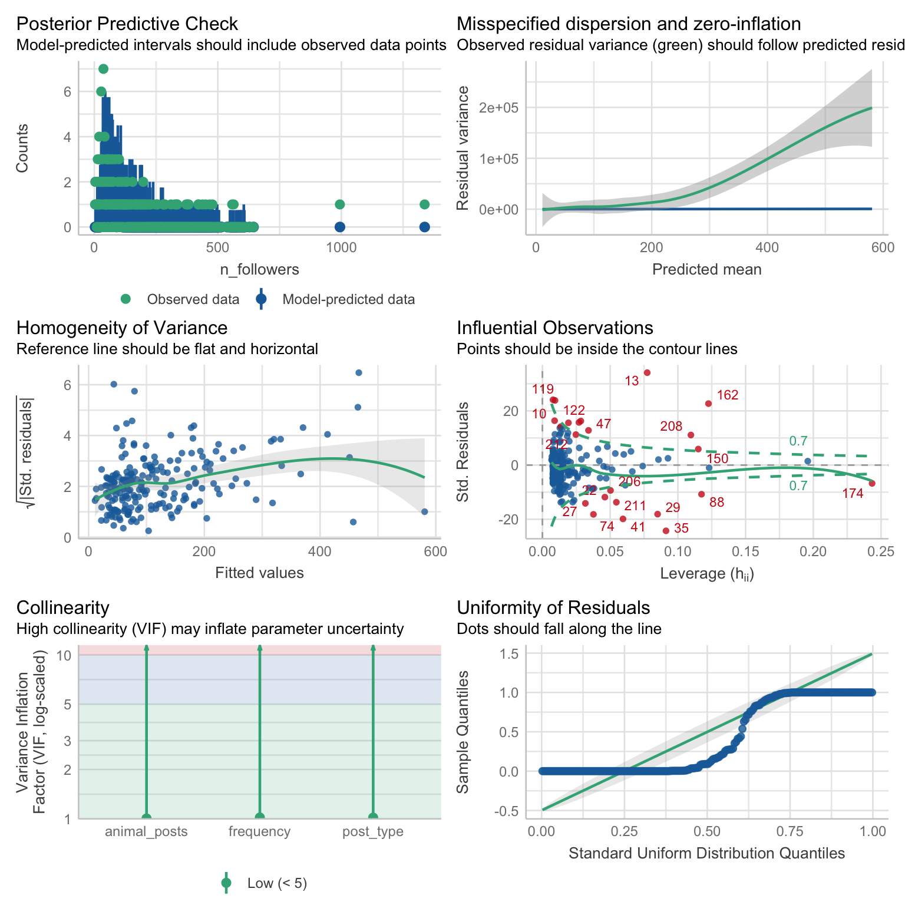
Gamma model output:
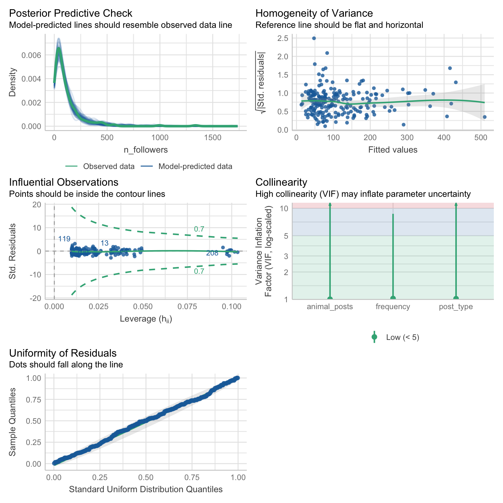
Check worksheet values
Once you’ve finished the worksheet, you can ask me to look through your work and give you feedback. Remember that you should also practice writing up the results in a brief report, not just running the code. If you’re stuck, you can use the quiz below to guide you.
You can also use the quiz below - if you fitted the models the correctly, your answers should match the values below.
Worksheet check
Based on the diagnostic checks, the model that should be selected is:
Total deviance explained: 70.3 %
Overall F statistic: 2.76
Parameter estimates (IRR):
Posting frequency (Once a day vs less than once a day): 1.71
Posting frequency (More than once a day vs less than once a day): 2.53
Post type (Unique posts vs reposts): 1.71
Percentage of animal posts: 1.04
The results are in line with Hypothesis 1:
The results are in line with Hypothesis 2:
The results are in line with Hypothesis 3:
Optional task:
Model prediction: 1460.65
In case someone messed up at the first hurdle and uploaded the wrong file…↩︎
But if we wanted to, we could do so in the same way as in an OLS model↩︎
I’m not trying to make any statement here about how students with better or worse grades are more or less likely to log their attendance. Zero-inflated models are a pain to simulate so it just so happens that this variable ended up being a predictor. In reality, the variable that we specify as a predictor of zero inflation needs to have some theoretical justification.↩︎
We don’t really cover how to write custom functions on this module but if you’d like to know more, you can ask me in the session.↩︎
If you would find a recap of logistic regression helpful, you can revisit the DiscovR 19 tutorial (Categorical outcomes).↩︎